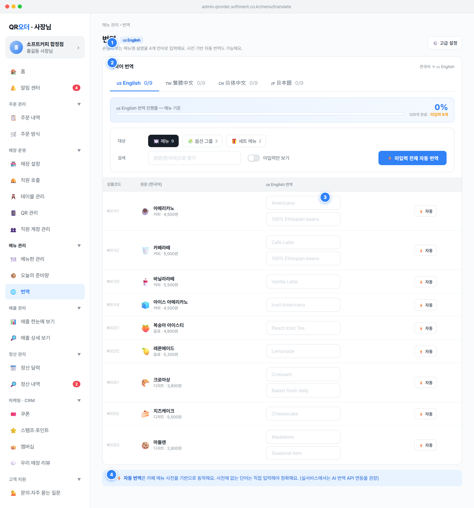

en / 번체 zhTw / 간체 zhCn / 일본어 ja)로 입력·관리하는 화면의 언어 전환 탭과 전체 개요 영역state.trLang 변경 후 renderApp()로 표 재렌더. 기본값 'en'(영어). 활성 탭은 파란 강조(.t.on)3/9). 카운트는 현재 대상(메뉴/옵션/세트) 항목 중 tr[langCode]가 비어있지 않은 개수pct=round(filled/total*100)) + 진행바(파란 채움) + '{flag} {label} 번역 진행률 — {대상종류} 기준' 캡션. 대상·언어 전환 시 즉시 재계산{filled}/{total}개 완료 · 미입력 N개'(앰버), 모두 채우면 '모두 완료'(초록){flag} {label}'), 패널 제목 우측에 '한국어 → {flag} {label}' 방향 표시TR_LANGS = [{code:'en',label:'English',flag:🇺🇸}, {code:'zhTw',label:'繁體中文'}, {code:'zhCn',label:'簡体中文'}, {code:'ja',label:'日本語'}] — 4개 고정, 1차 릴리즈 범위(SPEC §1.1: 서비스 자체는 한국어, 손님 다국어만 이 4종)item.tr[langCode](메뉴명 번역), item.trDesc[langCode](설명 번역). 둘 다 trEnsure()로 4개 언어 키를 빈 문자열 보장Translation 행 단위(DATA_MODEL §2.11): {store_id, entity_type(menu|category|option_group|option_item), entity_id, locale(en/ja/zh-CN 등), field(name|description), value(≤200자)}, UQ=(entity_type,entity_id,locale,field). 프로토타입의 tr/trDesc 맵은 이 행 집합으로 정규화 저장filled = 현재 대상 항목 중 tr[lang] 비어있지 않은 수, pct = total>0 ? round(filled/total*100) : 0 (total=0이면 0%)zhTw/zhCn ↔ 표준 zh-TW/zh-CN, en/ja는 동일 — 저장 시 표준 BCP-47로 정규화 권장0%·진행바 빈 상태로 표기하고 표는 빈 상태 문구 노출(핀 2 참조)손님이 보는 메뉴명·설명을 4개 언어로 입력해요. 사전 기반 자동 번역도 가능해요.'locale 가변이므로 확장 가능🍽️ 메뉴'(기본, state.trTarget='menu') / '🧩 옵션 그룹'('option') / '🎁 세트 메뉴'('set'). 클릭 시 표 데이터 소스를 MENUS/OPT_GROUPS/SETS로 교체하고 우측에 항목 수 표시원문(한국어)으로 찾기': state.trSearch에 바인딩, 원문 name에 대소문자 무시 부분일치 필터. onchange(엔터/포커스아웃)에 재렌더미입력만 보기'(state.trOnlyEmpty, 기본 OFF): ON이면 현재 언어 tr[lang]가 빈 행만 노출. 검색과 AND 결합⚡ 미입력 전체 자동 번역'(autoTranslateAll): 현재 대상의 미입력 항목만 사전 기반 자동번역. 이미 입력된 값은 건드리지 않음(덮어쓰기 없음). 사전에 있으면 tr/trDesc 채우고, 없으면 건너뜀상품코드'(90px) · '원문 (한국어)'(35%) · '{flag} {label} 번역' · 행 액션(140px, 무라벨)menu→MENUS(kind='메뉴'), option→OPT_GROUPS('옵션 그룹'), set→SETS('세트 메뉴'). 진행률·카운트도 이 대상 기준으로 분리 계산rows = items.filter(name 부분일치).filter(미입력만 보기 ? !tr[lang] : true)TR_DICT: 한글 단어/구문 → {en,zhTw,zhCn,ja} 매핑(카페 메뉴 위주). trAuto(text,lang)는 ① 완전일치 우선 ② 없으면 부분 문자열 치환 ③ 매칭 0건이면 빈 문자열 반환autoTranslateAll 결과 누계 cnt(번역됨)·skipped(사전 미등록)를 집계하여 결과 안내에 사용trSearch/trOnlyEmpty)이며 저장 대상 아님. 번역 값만 Translation으로 영속화먼저 {대상종류}을 등록해 주세요.'(메뉴 화면으로 유도), 검색·필터로 결과가 0개면 '다른 조건으로 다시 찾아봐 주세요.' (§3.2 능동·긍정 톤)자동 번역 결과 · 번역됨: {cnt}개 · 사전 미등록 (수동 입력 필요): {skipped}개' (프로토타입 alert → 실서비스 success/info 토스트 §1.1, 미등록 다수 시 직접 입력 유도)oninput 시 setTranslation(target,id,'name',lang,value) → item.tr[lang] 즉시 갱신. placeholder는 자동번역 후보(trAuto(원문))가 있으면 그 값, 없으면 '번역 입력'desc가 있는 항목에만 노출. setTranslation(...,'desc',...)로 item.trDesc[lang] 갱신. placeholder는 자동번역 후보 또는 '설명 번역(선택)'⚡ 자동'(autoTranslateOne): 그 행의 원문명/설명을 사전 기반 번역해 tr/trDesc[lang]에 채움(있으면 덮어씀). 행 단위는 명시 액션이므로 기존 값도 갱신✕'(빨강): 현재 언어의 그 행 tr[lang]·trDesc[lang]를 빈 문자열로 비우고 재렌더. 번역값이 있을 때만 노출{카테고리|미분류} · {가격}원', 옵션그룹='{필수|선택} · 항목 N개', 세트='구성품 N개 · {가격}원'. 메뉴 행은 좌측에 대표 이모지(img, 기본 🍽️)item.id로 MENUS/OPT_GROUPS/SETS에서 항목 조회. 표시 상품코드 item.code(영문1자+숫자5 = 6자, 매장 내 유니크, M=메뉴/O=옵션/S=세트 — spec/02-menu §1.5.1·§8)origName=item.name, origDesc=item.desc. 번역 바인딩: trName=tr[lang], trDesc=trDesc[lang]value 길이 ≤200자(Translation.value), 메뉴명 번역도 원문과 동일하게 1~30자 권장. HTML 주입 방지 위해 따옴표 이스케이프("→") 후 바인딩entity_type는 대상별로 menu/option_group(+option_item)/세트로 매핑(DATA_MODEL §2.11)autoTranslateOne은 trAuto 결과가 빈 문자열이면 값을 쓰지 않고 안내만 표시사전에 없는 단어예요. 직접 입력해 주세요.' 안내(가능형·능동 톤). 값은 변경하지 않음.banner-info), 클릭·토글 등 인터랙션 없음. 표 아래 항상 노출TR_DICT 카페 메뉴 사전). 핀 2·3의 ⚡ 버튼 동작과 일관TR_DICT(한글→4개 언어). 완전일치 우선, 부분 치환 보조(trAuto)Translation.value에 채우고 owner 검수 플로우 추가💡 ⚡ 자동 번역은 카페 메뉴 사전을 기반으로 동작해요. 사전에 없는 단어는 직접 입력해야 정확해요. (실서비스에서는 AI 번역 API 연동을 권장)'